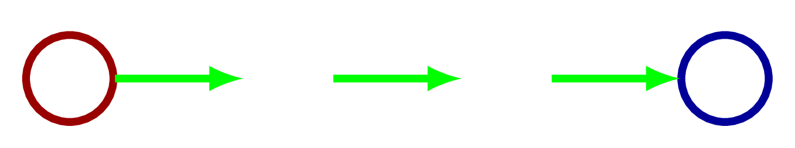
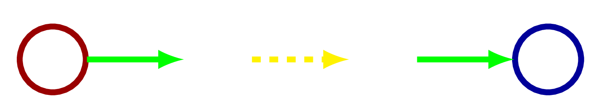
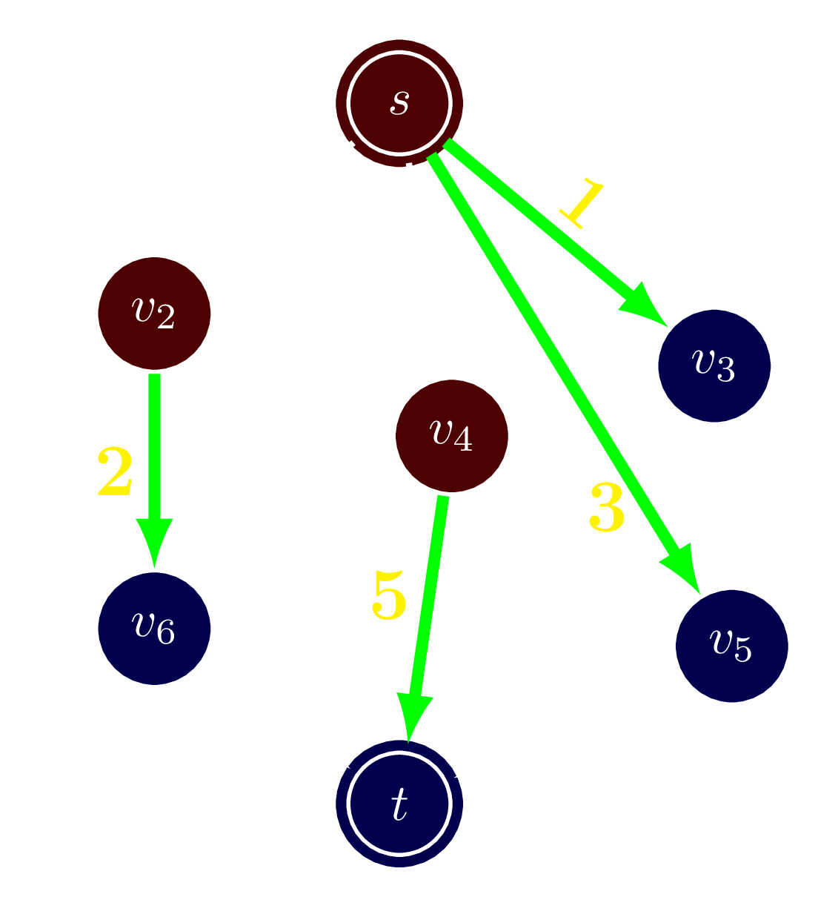

Flow
圖論關鍵
- 知識 - 多記結論
- 應變 - 臨場發揮
- 拿紙出來用力畫啊
Maximum Flow
Definition
可行流
想像一下…
- 有水流通過的水管
- 公路的車流
- 網路
這些東西都有這些特性
- 有流的上限
- 不能囤積
- 通常會有起點和終點。
- 而我們會希望能傳輸越多越好！
一個s-t 網路流是
- 一張圖 \( G = (V, E) \)
- 每條邊上有一個非負的權重 \( c(u, v) \geq 0 \) 代表邊的流量上限
- 並且有二個特別的點， 源點 \( s \) 與 匯點 \( t \) 。
一個 s-t 可行流是一個函數 \( f : V \times V \mapsto \mathbb{R} \) 滿足以下兩個條件
- 流量限制 :
\( f(u, v) \leq c(u, v), \; \forall (u, v) \)
- 流量對稱 :
\( f(u, v) = -f(v, u), \; \forall (u, v)\)
- 流量守衡 : 對於所有 \( v \in V \setminus \{s, t\} \) ， 有 \( \sum\limits_{u \in V} f(v, u) = 0 \)
而我們定義這個 s-t 流的流量為 \( \abs{f} = \sum_{v \in V} f(s, v) \)
Example
Example
Max-Flow Algorithm
Want
流量最大的一個流，也就是最大流！
想法
一點一點慢慢增加流量
 
問：可以增加多少流量？

直到有一天流不了。
Question: 這樣是否就是一個最大流？
Answer: No!
再仔細觀察！
還記得
流量對稱 :
\( f(u, v) = -f(v, u), \; \forall (u, v)\)
\( -3 < 0 \) ，可以流過去！
Question: 考慮負向邊之後，是否就是一個最大流？
Answer: Yes!
Residual Network
一個邊的剩餘流量 \( r(u, v) \) 定義為
\[ r(u, v) = c(u, v) - f(u, v) \]
如果 \( r(u, v) > 0 \) ，則可以沿著這些邊擴充流量，因此 \( r(u, v) > 0 \) 的所有邊構成的圖就稱作 剩餘網路，對於一個流 \( f \) 記作 \( G_f \)。
在剩餘網路上不斷找路增加流量！
假設找到了一條路徑 \( P = s \to v_1 \to v_2 \to \cdots \to v_n \to t \)。
- 可增加的最大流量就是路徑上剩餘流量的最小值。 \[ \Delta f = \min\limits_{e \in P} r(e). \]
- 一條邊 \( (u, v) \) 如果增加了流量 \( \Delta f \)，則 \[ \begin{align*} f(u, v) \gets f(u, v) + \Delta f, \quad r(u, v) \gets r(u, v) - \Delta f \\ f(v, u) \gets f(v, u) - \Delta f, \quad r(v, u) \gets r(v, u) + \Delta f \\ \end{align*} \]
初始邊
- 有向圖 \( u \to v \) : \( r(u, v) = c, r(v, u) = 0 \)
- 無向圖 \( (u, v) \) : \( r(u, v) = c, r(v, u) = c \)
實作
我們先進行一段 C++ Coding 宣導。
Ford-Fulkerson Algorithm
int f = 0
while (tf = find_path()) {
f += tf;
}
return f;
int find_path(int u = S, int curf = INF) {
if (u == T) return curf; // Done!
for (auto &e: E[u]) {
int v = e.dest, f = e.f, tf;
if (tf = find_path(v, min(curf, f))) {
auto rev = e.rev;
e.f -= tf;
ref.f += tf;
return tf;
}
}
return 0;
}複雜度
沒有保證！
在流量是整數的時候，每次流量至少增加 \( 1 \)，
複雜度 \( \ord{E \abs{f}} \)。
Edmonds-Karp Algorithm
int f = 0
while (tf = find_shortest_path()) {
f += tf;
}
return f;
有差嗎？
只差在 Edmonds-Karp 每次規定找最短的一條擴充路徑。
差多少呢？
差非常多！ 複雜度變成 \( \ord{V E^2} \)
不但跟流量大小無關，無理數也會 work ！
Proof
令 \( d(u) \) 表示 \( s \leadsto u \) 的最短距離，
則 \( s \) 到每個點的距離只會越來越遠，也就是 \( d(u) \) 遞增。
Proof
- 一次擴充一定會讓一條邊消失在剩餘網路裡。
- 每個邊可能會消失/回到剩餘網路裡，但至多 \( V/2 \) 次。
Dinic's Algorithm
Edmonds-Karp 的一個小優化。
每次擴充後其實只有一些點的 \( d(v) \) 會變。
一次把所有長度是 \( k \) 的擴充路徑都擴充完。
Details
複雜度
每次 \( \ord{k E} \)，總共 \( \ord{V^2 E} \)。
最大流的一些例題
現在有一些機器可以互相傳訊，但兩個機器 \( u, v \) 間會有一個 傳訊的頻寬上限 \( c(u, v) \) ，問你從機器 \( s \) 傳訊到 \( t \) 的 最大頻寬是多少？
裸的最大流，BJ4
給你一張圖 \( G \) ，請找出最多的 \( u \) 到 \( v \) 的路徑， 使得在這些路徑沒有重複的邊。
一些常見的建模技巧
- 點容量限制
- 多個 \( s, t \)。
- 無限的容量。
二分圖匹配
給你一個二分圖，求他最大的一個匹配
我們先說一下定義
- 二分圖
- 匹配
應用
二分圖匹配有不少應用
- 分配任務
- 分發志願序
- 決定動漫結局
二分圖轉 Flow
給你一張圖 \( G = (V, E) \)，每一點一開始分別有 \( a_i \) 個士兵。 現在你希望一天後每個點分別有 \( b_i \) 個士兵，但每個士兵 只能留在原地或是到相鄰的點，問你可不可能？
給你一張混合圖 \( G = (V, E) \)，也就是同時有有向邊和無向邊的圖。 問你存不存在一條歐拉回路？
Euler path
一筆畫走完整張圖。Example

有解的條件
觀察一個路徑 \( v_1 \to v_2 \to \cdots \to v_n \)
每一個中間走到的點 \( +2 \) ，兩端 \( +1 \)。
定義一個 奇點 是度數為奇數的點。如果圖連通，有
- 一個無向圖有歐拉路徑的條件是其奇點的個數是 \( 0 \) 或 \( 2 \)。
- 一個無向圖有歐拉迴路的條件是其奇點的個數是 \( 0 \)。
- 一個有向圖有歐拉路徑的條件是所有點都滿足 \( \deg^+(v) = \deg^-(v) \)，
或是除此之外有一個點滿足 \( \deg^+(v) = \deg^-(v) + 1 \)，
另一個滿足 \( \deg^+(v) = \deg^-(v) - 1 \)。 - 一個有向圖有歐拉迴路的條件是所有點都滿足 \( \deg^+(v) = \deg^-(v) \)，
重點
一個有向圖有歐拉迴路的條件是所有點都滿足 \( \deg^+(v) = \deg^-(v) \)，
混合圖呢？
觀察
其實就是要把每一個無向邊都定向成有向圖
最後要求每一個點的 \( \deg^+(v) = \deg^-(v) \)。
令還沒有算無向邊時 \( \delta(v) = \deg^-(v) - \deg^+(v) \)。
如果我們把一個邊定成 \( u \to v \) 後， \( \delta(u) \gets \delta(u) - 1, \delta(v) \gets \delta(v) + 1 \)。
可以想作一單位的 $\delta$ 從 \( u \) 流到了 \( v \)。
對於那些 \( \delta(v) > 0 \) 的，也就是需要流出 \( \delta(v) \) 的，我們就建 \( s \to v \)。
對於那些 \( \delta(v) < 0 \) 的，同理建 \( v \to t \)。
可以補好補滿 \( \iff \abs{f} = \sum_{\delta(v) > 0} \delta(v) \)
Minimum cut
Duality
對偶問題
問題常常是一體兩面
某個求最大值的問題常常等價於另一個求最小值的問題
- 「你會的問題裡最難的一個」差不多就是
「你不會的問題裡最簡單的一個」 - 「最多可以放多少隻蘿莉在 瀚x 旁邊他還能保持理智」 其實就是在問「要陷害 x瀚 去坐牢要擺幾隻蘿莉？」
- 「給你 1000 元你最多可以活多久」跟
「你要活一個月至少需要多少錢？」差不多。
那最大流的對偶是什麼呢？
想像一下…
一個網路的最大流，就是那些被
「堵住」的水管的淨流量。
這些堵住的水管會把點分成兩群。
Definition
割的定義
一個 s-t cut \( C \) 是一個圖的分割，將圖中的點分成兩個集合 \( C = (S, T) \)， 滿足 \( s \in S, \; t \in T \)。我們定義這個割的大小為
\[ \abs{C} = \sum_{u \in S} \sum_{v \in T} c(u, v). \]
也就是所有滿足 \( u \) 在 \( S \)，\( v \) 在 \( T \) 的邊 \( (u, v) \) 的流量上限和。
(並不計算 \( u \) 在 \( T \) ， \( v \) 在 \( S \) 的邊。)
一個 最小割 就是最小的一個割。
而最大流的對偶問題正是最小割。
Example
對一個流量網路 $G$，以下三件事情是等價的。
- \( f \) 是一個 s-t 最大流。
- 關於 \( f \) 的剩餘網路 \( G_f \) 沒有從 \( s \) 到 \( t \) 的擴充路徑。
- \( \abs{f} = \abs{C} \)，其中 \( C \) 是最小 s-t 割。
(1) \( \implies \) (2) 前面講過。
截流引理
對於一個流量 \( f \)，定義一個 s-t cut \( (S, T) \) 的截流為
\[ \abs{f(S, T)} = \sum_{u \in S, v \in T} f(u, v) \]
則 \( \abs{f(S, T)} = \abs{f} \) 。
(2) \( \implies \) (3)
找所有在剩餘網路上， \( s \) 連的到的點，令其為 \( S \)， 其他點就是 \( T \)。
\( t \) 不在 \(S\) 中。
這個 cut 上的邊都要流滿，否則有路徑。
\( C \leq \abs{f} \)
由截流知 \( \abs{f} \leq C \)
\( \abs{f} = C \)
(3) \( \implies \) (1) 也證完了。
Find a min-cut
這個引理也告訴了我們，找所有在剩餘網路上， \( s \) 連的到的點，令其為 \( S \)， 其他點就為 \( T \)，就恰好是一個 s-t cut。
最小割的一些例題
你被你老闆開除了，因此你決定在他打 LOL 的時候讓他斷線。 從他的電腦 \( s \) 到 LOL 伺服器 \( t \) 有一些 Router，Router 間有一些 網路線相連，剪掉 \( u \) 到 \( v \) 的網路線要花 \( c(u, v) \)，如 果 \( s \) 到 \( t \) 沒辦法經過一些 Router 連到就會斷線，問你要達成計畫 的最小花費。
裸的最小割，BJ4
分兩類問題
先看個例題
你有 \( n \) 個產品可以生產，並且有 \( m \) 種不同的機器，生產第 \( i \) 個產 品必須要有某一些等定的機器，但不同的產品如果用到相同的機器的話只需要一個 機器即可，現在給你每個機器的價格，和生產每個產品的獲利，你要決定 要生產哪些產品使你的獲利最高。
分兩類問題
分成要買/不要買的機器，要生產/不要生產的產品。
把要的就分到 \( S \)，不要的就分到 \( T \)。
當然，還是要建模使得求出的答案即是題目要的。
建模方法
- 選 \( u \) 但不選 \( v \) 要花費 \( c \)。
- 選 \( u \) 就一定要選擇 \( v \)。
- 選 \( u \) 要花費 \( c \)。
- 選 \( u \) 會賺到 \( c \)。
回到那一題
Minimum cost Max flow
Definition
最小花費最大流的定義
和最大流時一樣，我們要求一個流量最大的流。
但現在每個邊除了有流量上限以外，還有一個價格 \( k(u, v) \)， 表示每單位流過要付多少錢。
最後總花費是 \[ k(f) = \sum_{f(u, v) > 0} k(u, v) \cdot f(u, v) \]
如何修改前面的使得可以找一個最小花費的最大流？
我們先想剩餘網路要怎麼做修改。
流量應該不變。
那剩餘網路的花費 \( k_{f} (u, v) \) 如何設？
如果在原圖有一條有向邊 \( u \to v \) ， Cost 為 \( k(u, v) \)。
- 順流： 在剩餘網路上流一單位，表示在原來的流上增加一單位。 \[ \implies k_f(u, v) = k(u, v) \]
- 逆流： 在剩餘網路上反著流一單位，表示在原來的流上減少一單位。 \[ \implies k_f(v, u) = -k(v, u) \]
一個最大流 \( f \) 是一個最小花費最大流若且唯若其剩餘網路上沒有負環，也就是花費為負的環。
如果在剩餘網路上沒有負環，現在我們找一個花費最小的路徑擴充，則擴充後 剩餘網路上還是不會有負環。
由這兩個引理我們可以知道只要每次都找最短路擴充，直到最大流即可。
只是現在「最短路」並非邊數最少的路徑，而是花費總合最少的路徑！
Psuedo Code
int f = 0
while (tf = find_mincost_path()) {
f += tf;
}
return f;
Finding min-cost path
可以用任何能處理負邊的演算法，如 SPFA。
總複雜度是 \( \ord{SP \cdot \abs{f}} \)。
最小花費最大流的一些例題
很多最大流的題目都可以推擴成花費流。
給你一個邊有權值的二分圖，求他的一個最大權值匹配。
你有 \( n \) 個工作可以分配給 \( k \) 個機器人，每個工作只能給一個機器人做， 而且第 \( i \) 個工作必須從第 \( s_i \) 天做到 \( s_i + t_i - 1 \) 天，不能中斷，做完 了這個工作可以得到 \( c_i \) 元。 問你最多可以賺到多少錢？
額外的問題
給你一個圖，找他的導出子圖 \( H \) 使得他的密度最大。
一個圖的密度定義為 \( \rho = \abs{E} / \abs{V} \)
思路
二分搜答案，假設最大密度為 \( k \)。
\[ \abs{E'} - k \abs{V'} \geq 0 \iff \max_{H = (V', E')} \abs{E'} - k \abs{V'} \geq 0 \]
\[ \abs{E'} = \frac{1}{2} \sum_{v \in V'} \deg_H(v) \]
\[ \deg_H(v) = \deg_G(v) - \sum_{\substack{u \notin H \\ (v, u) \in E}} 1 \]
\[ \Leftrightarrow \; - \min_{H = (V', E')} \sum_{v \in V'} \left( \left(2k - \deg_G(v) \right) + \sum_{\substack{u \notin H \\ (v, u) \in E}} 1 \right) \geq 0 \]
分兩類問題！
給你一個長度為 \( n \) 的序列，請找出他的一個子序列 \( A \)，使得 \( k / \abs{A} \) 最大，其中 \( k \) 是 \( A \) 中的逆序數對的個數。
給你一個有向圖 \( G = (V, E) \) ，你要用最少不相交的簡單路徑 \( P_i \) 把所有的點都蓋過。 一個簡單路徑是一個點都沒有重複的路徑。兩個路徑不相交表示他們 裡面沒有重複的點。
如果有一個路徑 \( v_1 \to v_2 \to v_3 \cdots \)
就是 \( \texttt{next}(v_1) = v_2, \texttt{next}(v_2) = v_3 \)匹配！
現在網路流上的每個邊不只有流量上限 \( c^+(u, v) \)，還有 流量下界 \( c^-(u, v) \)，求一個合法的流(不需最大)。
不如先補滿下界。
但有些點的流量就不守恆了，進來的跟出來的差了 \( \delta(v) \)。
有沒有想到混合圖的歐拉回路那一題！
一些和匹配相關的問題
- 最大獨立點集：一個最大的點集 \( V' \) 使得裡面的點都不相鄰。其大小記做 \( I(G) \)。
- 最大匹配數：前面定義過了。其大小記做 \( M(G) \)。
- 最小點覆蓋：最小的一個點集，使得所有的邊都至少與點集裡的一個點相鄰。其大小記做 \( C_v(G) \)。
- 最小邊覆蓋：最小的一個邊集，使得所有的點都至少與邊集裡的 一個邊相鄰。其大小記做 \( C_e(G) \)。
 獨立點集
獨立點集 點覆蓋
點覆蓋 邊覆蓋
邊覆蓋- \( I(G) + C_v(G) = \abs{V} \).
- \( M(G) + C_e(G) = \abs{V} \).
- 對連通二分圖，有 \( M(G) = C_v(G), I(G) = C_e(G) \).
二分圖的特性
\( M(G) = C_v(G) \)
把點覆蓋轉成 min-cut ！
很不一樣的是這次在 s 表示 (v in X and 不選 v) or (v in Y and 選 v)